AI 검색이 바꾼 것과 4단계 전략
예전 구글은 파란 링크 열 개를 보여 주고, 사람들은 그중 하나를 눌러 사이트로 들어왔어요. 지금은 검색 결과 맨 위에서 AI 개요가 답을 먼저 줘요. 아예 ChatGPT나 Claude, Perplexity에 바로 묻는 사람도 많고, 이런 서비스는 링크 없이 답만 주는 경우가 많아요. 그래서 사이트로 넘어오는 클릭은 줄었어요.
대신 넘어온 사람은 훨씬 잘 사요. 발표자는 Ahrefs가 자기 사이트 방문자를 분석한 글을 화면에 띄워요. 굵은 제목 '0.5% of Ahrefs traffic is from AI search'가 보이는 부분이에요.
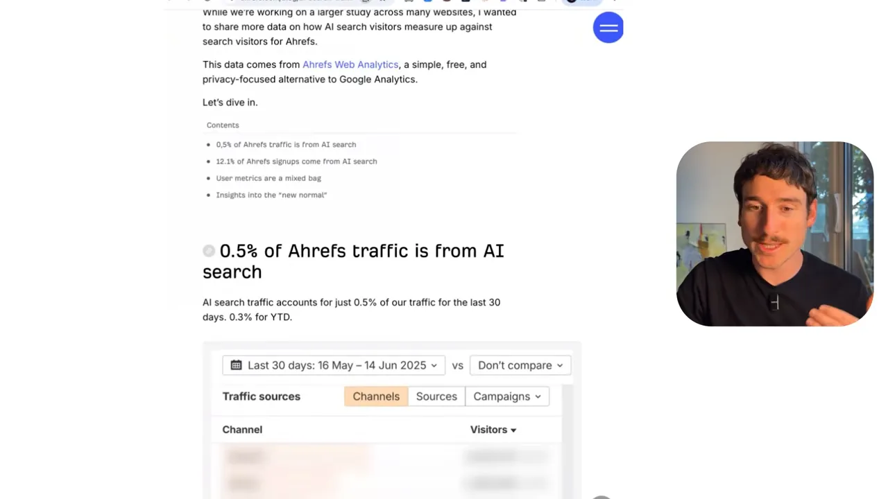
정리하면 AI 검색에서 온 방문자는 전체의 0.5%인데, 가입의 12.1%가 여기서 나왔어요. 같은 글은 이 방문자들이 일반 검색 방문자보다 23배 높은 비율로 전환됐다고 해요. 발표자는 이 트래픽이 퍼널 하단, 곧 사기 직전 사람들의 트래픽이라고 봐요.
발표자가 강조하는 또 한 가지는, AI 검색이 '처음 알게 되는 곳'만은 아니라는 점이에요. 광고나 이메일, 소셜 글로 브랜드를 알게 된 사람도 결국 구글이나 ChatGPT에서 나를 검색해요. 믿을 만한지, 경쟁사와 비교하면 어떤지 확인하는 마지막 단계예요. 여기서 잘 보이면 다른 마케팅의 효율까지 올라가요.
네 단계만 하면 된다
그래서 발표자는 AI 검색의 모든 것을 다루지 않아요. 전환의 90% 이상을 만들 5~20개 페이지에 집중하자고 해요. 화면의 손글씨 메모가 그 네 단계예요. 단계마다 Do와 Don't가 한 줄씩 붙어 있어요.

| 단계 | 할 것 | 하지 말 것 |
|---|---|---|
| 1. 전환의 90%를 만들 5~20개 페이지 | 경쟁사 대안, 경쟁사 vs 경쟁사 | 'CRM이란?' 같은 넓은 주제 |
| 2. 정보 이득 더하기 | 자체 조사, 설문, 1차 데이터 | 고유한 숫자 없는 AI 요약 |
| 3. 경쟁사 도구를 직접 써 보고 리뷰 | 실제 스크린숏, 페이지 안의 10분짜리 영상 | 시각 증거 없는 글뿐인 리뷰 |
| 4. 30일마다 갱신 | 가격표, 비교표, 사양, 통계 갱신 | 수정일 없이 방치 |
4단계를 발표자는 '30일 신선도'라고 불러요. 예를 들어 Claude Code 사용법 글은 석 달만 지나도 낡아요. 그래서 글 위쪽에 '게시일'과 '마지막 수정일'을 꼭 보여 주라고 해요. 구글과 AI 크롤러가 이걸 신선도 신호로 쓴다는 게 그의 설명이에요.
수익부터 역산하기
보통은 키워드 조사부터 시작해요. 발표자는 그게 거꾸로라고 봐요. 키워드 200개를 모아도 그중 무엇이 매출로 이어지는지 선이 그어져 있지 않거든요. 먼저 숫자 몇 개를 알아 두면, 얼마를 벌 수 있는지 거꾸로 계산할 수 있어요.
화면의 'ROI Roadmapping' 메모가 그 순서예요. 위의 세 줄은 이미 아는 숫자이고, 아래 세 줄은 그 숫자로 답을 구할 질문이에요.

- AOV(Average Order Value): 한 번 주문할 때 평균 금액이에요.
- LTV(Customer Lifetime Value): 고객 한 명이 관계가 끝날 때까지 내는 돈이에요. 발표자는 AOV보다 이게 더 중요하다고 해요.
- 전환율: 방문자가 데모 예약, 이메일 등록(리드), 구매까지 가는 비율이에요.
이걸 알면 '트래픽 X × 전환율 Y × LTV Z = 매출'이 돼요. 다시 거꾸로 가면, 그 트래픽을 얻으려면 어떤 검색량의 키워드에서 어떤 클릭률로 몇 개나 3위 안에 들어야 하는지가 나와요.
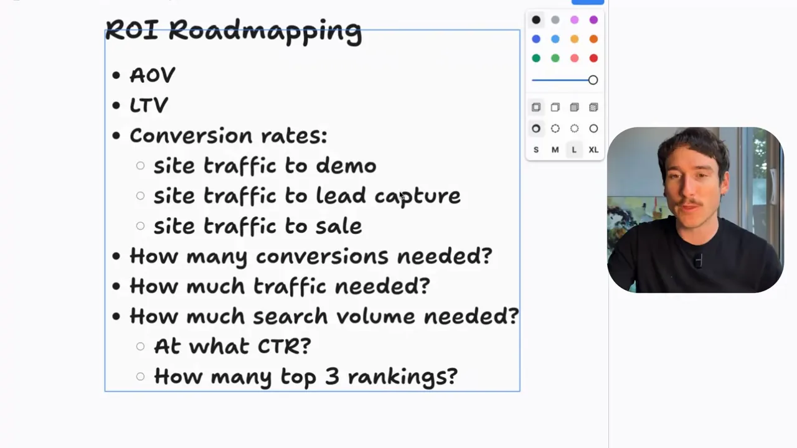
계산에 넣을 키워드 고르기
계산기에 넣는 키워드는 아무거나가 아니에요. 화면에 나온 세 조건을 모두 갖춘 퍼널 하단 키워드만 넣어요.
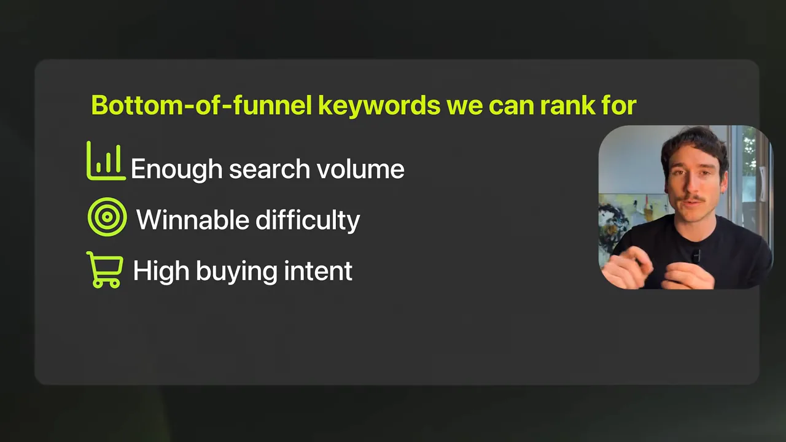
검색량은 Ahrefs에서 봐요. 아래 화면은 'hubspot crm vs salesforce crm' 키워드 개요예요. 가운데 검색량은 200인데, 오른쪽 형광 테두리 칸의 트래픽 잠재력은 2.5K예요.
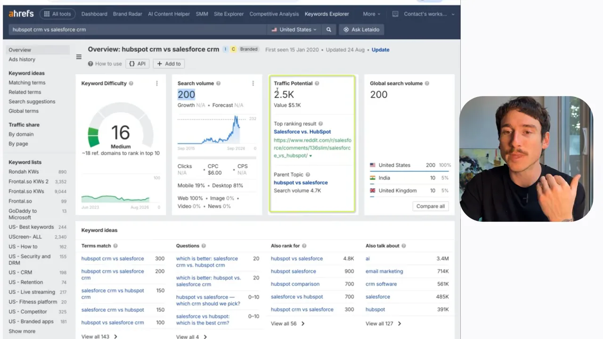
발표자는 한 페이지가 대표 키워드 하나 말고도 보조 키워드 12~20개로 순위에 오른다고 해요. 그래서 키워드 하나의 검색량보다, 지금 1위 페이지가 받는 총 트래픽(트래픽 잠재력)이 더 나은 추정치예요.
또 하나 보정할 게 있어요. Ahrefs나 SEMrush 같은 도구는 바깥에서 추정한 숫자예요. 진짜 숫자는 그 사이트 주인의 구글 서치 콘솔이나 GA4(Google Analytics 4)에만 있어요. 발표자 팀이 34개 사이트의 실제 서치 콘솔 수치와 Ahrefs 추정치를 비교해 보니, Ahrefs가 1.5~2배 적게 잡았다고 해요. 그래서 계산기에 '1.5배 보정' 칸을 넣었어요. Ahrefs가 월 1,200회라고 하면 실제로는 1,800~2,000회쯤으로 봐요.
예시 계산
발표자는 CRM(Customer Relationship Management) 회사를 예로 계산기를 채워요. 아래 그림은 영상에서 말로 넣은 값을 순서대로 이은 거예요.
- 대상 키워드의 30%에서, 6개월 안에 3위 안에 든다고 가정해요.
- 클릭률은 구글 1~3위 클릭률을 여섯 개 연구에서 평균 낸 값을 써요.
- 비교 페이지의 방문→데모 전환율은 5~10%로 보고 보수적으로 5%를 넣어요. 데모→계약은 10~30% 중 15%예요.
- 첫해 계약액 6,000달러, 고객 생애 가치 18,000달러, SEO(Search Engine Optimization) 비용은 월 10,000달러예요.
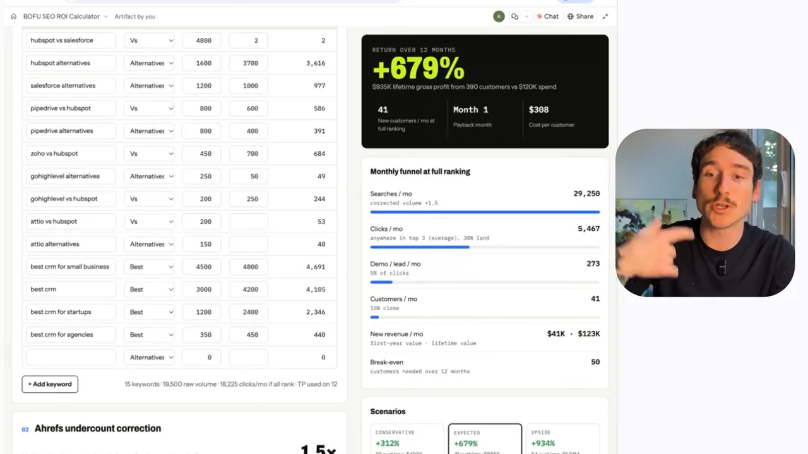
이 조건에서 발표자는 12개월 ROI(Return on Investment)가 700% 가까이 나온다고 말해요. 순위를 오른 키워드 비율을 50%로 올리거나 LTV를 바꿔 보면 결과가 크게 달라져요.
그는 이 숫자가 예측일 뿐이라고 여러 번 못 박아요. AI 개요만 보고 바로 사이트를 직접 찾아오는 사람처럼 클릭으로 잡히지 않는 경로도 많아요. 계산의 목적은 '이 채널에 걸어 볼 가치가 있나'를 판단하는 거예요. 실제로 순위가 오르기 시작하면 진짜 데이터로 기준을 다시 맞춰요.
돈이 되는 키워드 여섯 가지
대부분의 SEO는 트래픽이 많은 키워드를 쫓아요. 발표자는 그걸 '허영 지표'라고 불러요. 트래픽의 목적은 전환인데, 들어왔다가 바로 나가는 방문자는 아무 의미가 없다는 거예요. 그래서 깔때기를 뒤집어, 사려는 사람이 검색하는 키워드부터 시작하자고 해요.
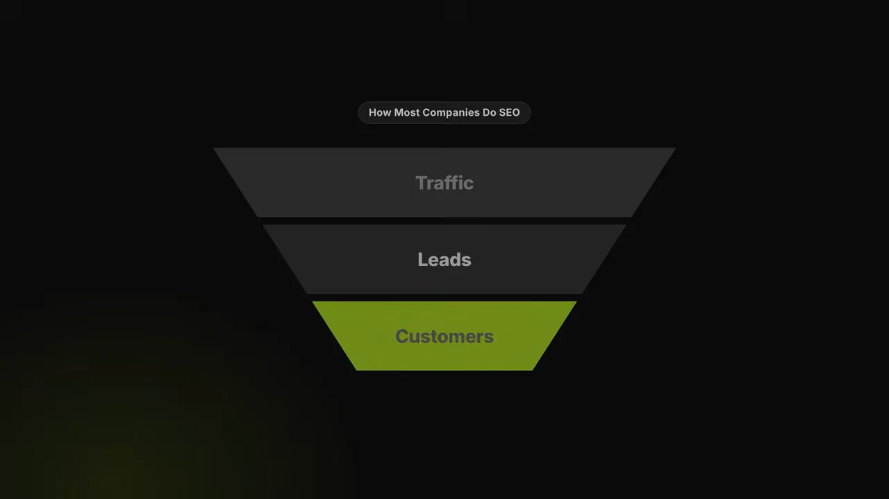
시간만 버리는 키워드
누가·무엇·언제·어디서·왜·어떻게로 시작하는 키워드는 대개 정보성이에요. 'CRM을 왜 써야 하나요?'를 검색하는 사람은 아직 사기엔 이른 단계예요. 'CRM에 투자할 적기는 언제인가요?'는 조금 더 내려왔지만 아직 지금 살 사람은 아니에요.
'어떻게'에는 예외가 있어요. '옛 CRM에서 연락처를 내보내는 법'을 찾는 사람은 CRM을 갈아타는 중이에요. 이런 검색어는 노릴 가치가 있어요. 발표자는 이런 키워드를 정보성, 매출로 이어지는 키워드를 상업성·거래성이라고 나눠요. 이 구분이 검색 의도예요.
돈이 되는 여섯 가지
예시는 CRM 시장이에요. 내가 Attio나 Pipedrive 같은 작은 CRM 회사이고, HubSpot과 Salesforce 같은 큰 회사와 경쟁한다고 가정해요. 화면에 여섯 줄이 차례로 쌓여요.
!['Keywords that generate revenue' 제목 아래 [Competitor] Alternatives, [Competitor] vs [Competitor], [Competitor] Review, Best [product] for X, How to export data from [Competitor], [Software] for [role/category] 여섯 줄이 적힌 화면](assets/frame-2943.webp)
| 키워드 틀 | 예시 | 왜 돈이 되나요 |
|---|---|---|
| [경쟁사] 대안 | HubSpot alternatives | 살 분야는 정했는데 제품을 못 정한 사람이에요. 큰 경쟁사가 광고로 수요를 만들어 주면, 맞지 않아 돌아선 사람이 대안을 찾아요 |
| [경쟁사] vs [경쟁사] | HubSpot vs Salesforce vs Attio | 두 경쟁사 비교에 나를 세 번째 선택지로 끼워 넣어요. 나와의 비교(Attio vs HubSpot)도 만들어요 |
| [경쟁사] 리뷰 | HubSpot review | 경쟁사를 알아보는 사람에게 다른 선택지를 보여 줄 수 있어요 |
| [제품] 추천 | best CRM for agencies | 구매 의도가 가장 높은 축이에요. 사람들은 AI가 추천한 걸 믿어요 |
| [경쟁사]에서 데이터 내보내기 | export data from HubSpot | 갈아타는 중이라는 신호예요. 소프트웨어 회사에 맞아요 |
| [직군·업종]용 [소프트웨어] | CRM for real estate agents | 이 페이지에 오는 사람이 곧 이상적 고객이에요 |
대안 키워드에는 실제 사례가 붙어요. 발표자의 B2B(Business to Business) 서비스 고객사에게는 투자를 크게 받은 경쟁사가 있었어요. 그 경쟁사가 광고를 쏟아 붓자 관심이 생긴 사람들이 사이트에 들어갔다가, 대기업용이라 자기에게 안 맞는다는 걸 알았어요. 그들이 '○○ 대안'을 검색했을 때 고객사가 나왔고, 전환이 크게 늘었다고 해요.
비교 키워드는 AI 검색에서 특히 중요해요. 'best CRM'을 ChatGPT에 물으면 'Salesforce가 최고'라고만 답하지 않아요. '대기업엔 Salesforce, 매출 100만~500만 달러 스타트업엔 Attio, 대행사엔 Go HighLevel'처럼 쓰임새별로 나눠서 답해요(발표자가 지어낸 예시예요). 이 설명의 재료를 내가 페이지로 주지 않으면 경쟁사가 주고, 경쟁사가 이야기를 가져가요.
리뷰 페이지는 경쟁사 도구를 실제로 써 보고 스크린숏을 넣어야 쓸모가 있어요. 그리고 이 페이지들을 서로 링크로 이어야 효과가 커요. 대안, 비교, 리뷰 페이지가 서로 연결된 '작은 우주'가 있으면 AI가 이 분야의 선택지를 통째로 이해할 수 있어요.
경쟁사가 다섯이면 대안 페이지가 다섯, 비교 페이지는 그 조합만큼 나와요. HubSpot vs ActiveCampaign, HubSpot vs GoHighLevel, GoHighLevel vs ActiveCampaign처럼요. 그중 실제 검색량이 있고 이길 만한 것부터 고르면 돼요.
이길 수 있나 보고, 한 페이지에 키워드 묶기
좋은 키워드를 골랐으면, 내가 그 키워드로 순위에 오를 수 있는지 봐야 해요. 발표자는 Ahrefs의 키워드 난이도를 그대로 믿지 말라고 해요. 'HubSpot vs Salesforce'는 미국에서만 월 5,000회 가까이 검색되는데, 화면의 난이도 게이지는 0을 가리켜요.
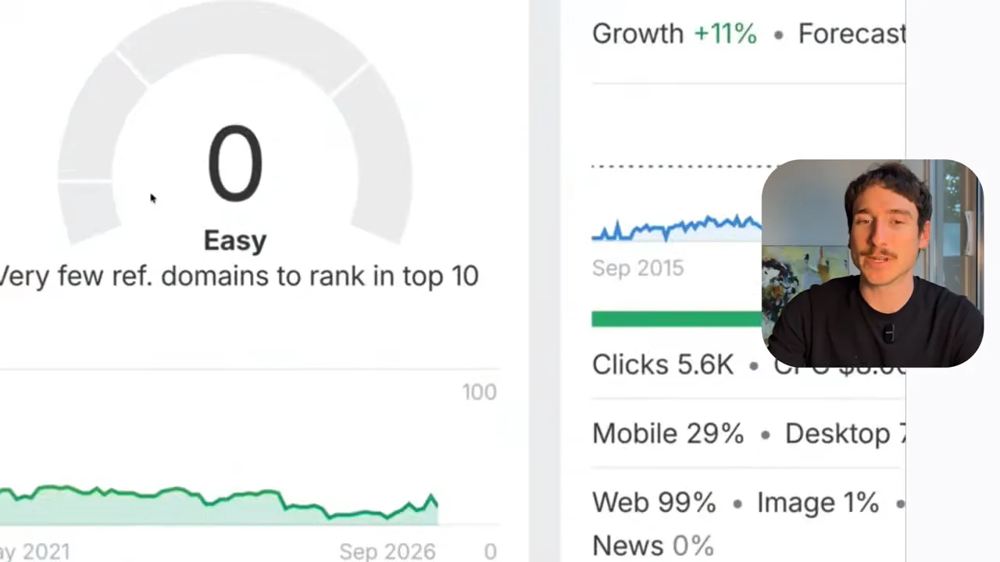
더 나은 방법은 지금 상위 10개 결과를 보는 거예요. 검색 결과 개요 표의 DR(Domain Rating) 열이 각 사이트의 도메인 권위예요. 이 예시에서는 59, 78, 51 같은 숫자가 보여요.
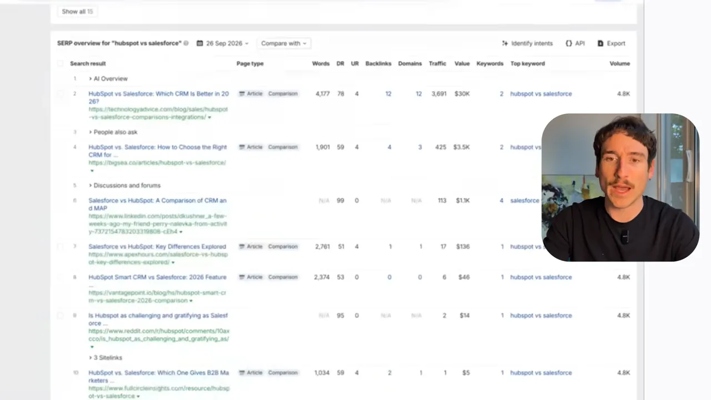
- DR 비교: 내 DR이 30인데 상위가 50~80이면 어려워요. 상위 숫자보다 내가 높으면 해 볼 만해요. 예를 들어 Attio의 DR은 77이라서 이 키워드에서 기회가 있어요.
- 사이트 종류: 상위가 CRM 회사들이면 같은 CRM 회사인 내게 좋은 소식이에요. TechCrunch 같은 미디어가 가득하면 구글이 이 검색어에 미디어를 보여 주고 싶어 한다는 뜻이에요. 블로그 글이 올라 있으면 블로그 글로 도전할 수 있어요.
'Attio vs HubSpot' 검색 결과에는 DR 95, 99, 93짜리 사이트가 있어서 이기기 어려워요. 그런데 그 사이에 LinkedIn 게시물이 끼어 있어요.
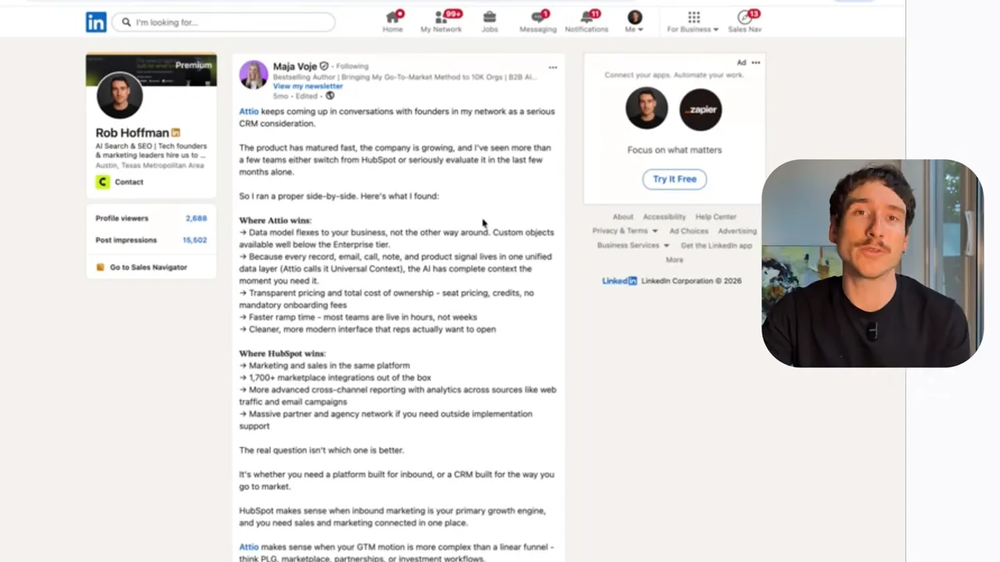
발표자는 지금 LinkedIn이 '사기급'이라고 해요. 특히 LinkedIn Pulse 아티클로 경쟁이 센 키워드에 오르기 쉽대요. 내 사이트의 권위가 낮다면 LinkedIn 사이트의 권위를 빌리는 셈이에요. 이 방법은 뒤쪽 'LinkedIn과 YouTube' 섹션에서 다시 나와요.
한 페이지로 키워드 20개 잡기
페이지 하나는 키워드 하나로만 순위에 오르지 않아요. 제목에 쓰는 대표 키워드 아래에 보조 키워드 12~20개가 같이 붙어요. 화면의 'Secondary Keywords' 메모는 페이지 종류별로 어떤 보조 키워드를 넣을지 정리한 거예요.
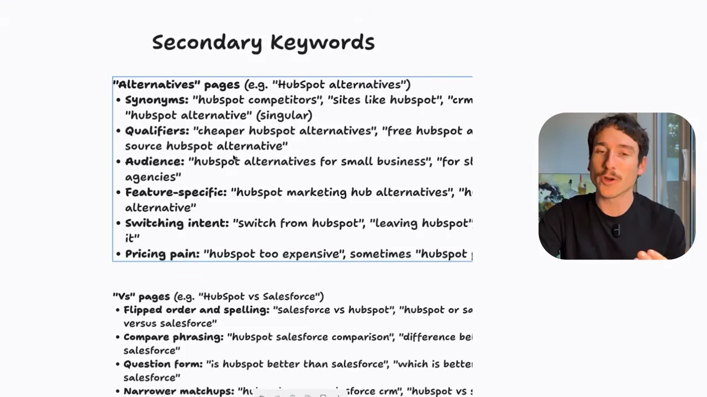
| 페이지 종류 | 함께 넣을 보조 키워드 예 |
|---|---|
| 대안 (HubSpot alternatives) | HubSpot competitors, sites like HubSpot, HubSpot alternative(단수), cheaper·free HubSpot alternatives, HubSpot alternatives for small business, switch from HubSpot |
| 비교 (HubSpot vs Salesforce) | Salesforce vs HubSpot(순서 바꿈), HubSpot Salesforce comparison, is HubSpot better than Salesforce, HubSpot vs Salesforce pricing |
| 추천 (best CRM) | top CRM software, best CRM for startups, best free CRM, cheapest CRM, best CRM 2026 |
비교 페이지는 순서를 바꾼 검색어의 검색량이 다를 수 있어요. Ahrefs에서 둘 다 확인하고, 더 많이 검색되는 쪽을 제목으로 써요. 앞에서 본 'Attio vs HubSpot'도 거꾸로 쓴 쪽이 검색량이 더 많아서 그걸 제목으로 골랐어요.
한 페이지로 묶을까, 나눌까
보조 키워드를 무작정 페이지마다 흩어 놓으면 키워드 카니발리제이션이 생겨요. 내 사이트 안에서 비슷한 키워드를 노리는 페이지끼리 경쟁하는 상황이에요. 구글과 AI 크롤러는 어느 페이지를 올려야 할지 헷갈려서, 결국 둘 다 올리지 않아요.
그래서 묶을지 나눌지를 정해야 해요. 발표자가 메모에 적은 판단 순서를 그림으로 옮겼어요.
flowchart TD Q["한 페이지로 두 검색자를
다 만족시킬 수 있나?"] --> G["구글 테스트
두 키워드를 각각 검색"] G -->|"같은 페이지가 나와요"| ONE["한 페이지로 묶기"] G -->|"완전히 달라요"| TWO["따로 만들기"] G -->|"반쯤 겹쳐요"| O["개요 테스트
두 페이지의 소제목을 써 보기"] O -->|"소제목이 거의 같아요"| ONE O -->|"각자 다른 예시·근거가 필요해요"| TWO P["지름길: Ahrefs Parent topic이 같으면"] --> ONE
Ahrefs의 부모 토픽 기능을 쓰면 더 빨라요. 'HubSpot alternative'를 넣으면 부모 토픽이 'HubSpot alternatives'로 나와요. 그러면 단수형은 복수형 페이지 안에서 잡으면 돼요. 그래도 도구가 늘 맞지는 않으니, 결국 판단은 사람이 해요. 발표자는 이렇게 정리해요. 두 검색어를 찾는 사람에게 각자 전용 페이지가 있으면 도움이 될까요? 그렇다면 나누고, 아니면 묶어요. 너무 오래 고민하지 말래요.
묶음마다 할 일 정하기
메모의 5번 항목이 묶음마다 고를 행동 세 가지예요.
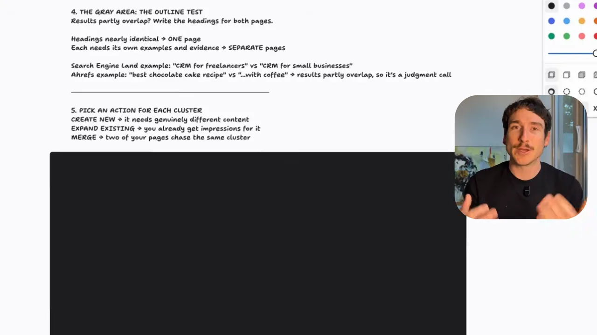
- 새로 만들기: 이 검색어로 노출되는 페이지가 없거나, 있어도 전혀 관련 없을 때예요.
- 기존 페이지 키우기: 이미 노출이 잡히고 구글 1~2페이지에 있는 글이 있으면, 새로 만들지 말고 그 글을 넓혀요. 새 글이 기존 글과 경쟁할 수 있거든요.
- 합치기: 구글 서치 콘솔에서 'HubSpot alternatives'를 검색했는데 내 페이지 세 개가 노출·클릭을 나눠 받고 있다면 카니발리제이션이에요. 대표 페이지를 정하고, 나머지 내용을 옮긴 뒤 옛 주소를 301 리디렉트로 대표 페이지에 보내요.
키워드·페이지 매핑 시트
마지막으로 발표자는 이 모든 걸 스프레드시트 한 장에 정리해요. 한 행이 한 페이지예요. 첫 행을 보면 대표 키워드 'hubspot alternatives'(검색량 1,600, 난이도 2) 옆 칸에 보조 키워드가 괄호 속 검색량과 함께 쌓여 있어요.
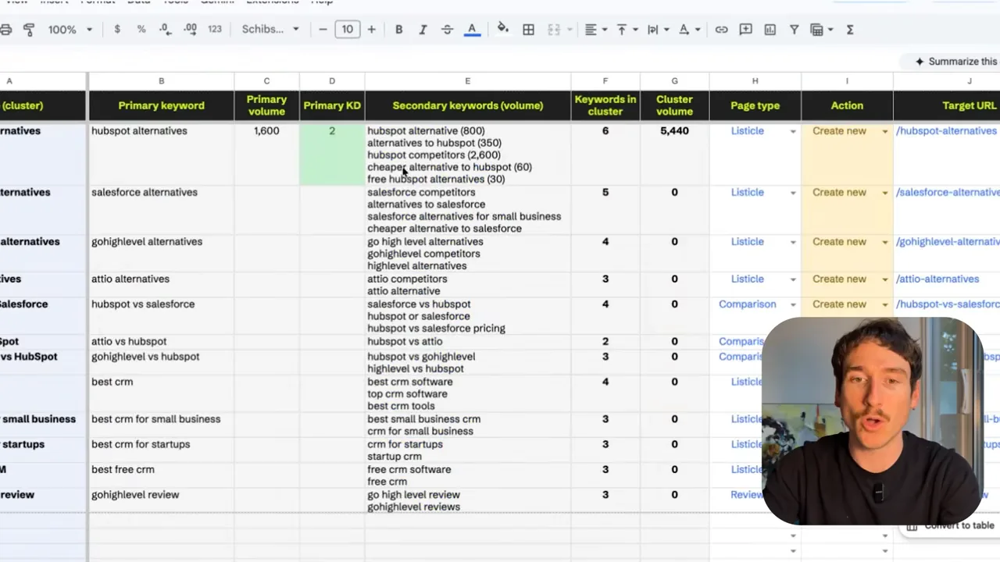
Ahrefs가 검색량을 적게 잡는다는 점까지 생각하면, 이 한 페이지 뒤에는 월 1만 건 가까운 검색이 있을 수 있다고 발표자는 봐요. 이 시트의 핵심 규칙은 하나예요. 같은 키워드가 두 행에 나오면 안 돼요. 'HubSpot competitors'가 대안 페이지의 H2로 들어갔다면, 사이트의 다른 어떤 페이지에도 그 소제목이 있으면 안 돼요.
사이트 구조와 스키마
키워드를 아무리 잘 골라도, 구글과 AI가 나를 그 분야의 권위자로 보지 않으면 순위가 안 나와요. 발표자는 그 신호를 보내는 과소평가된 방법으로 사이트 구조를 꼽아요. 지루해 보이지만 처음에 한 번 잘 잡아 두면 이후 모든 글에 효과가 쌓인다고 해요.
폴더 없이 흩어진 주소는 안 좋아요
화면 왼쪽 'DO NOT' 아래가 흔한 실수예요. 블로그 글이 사이트 바로 아래에 있고, 서비스 다섯 개가 한 페이지에 나열돼 있거나, 서비스마다 뿌리에 따로 흩어져 있어요. 오른쪽 'DO' 아래가 고친 모습이에요.
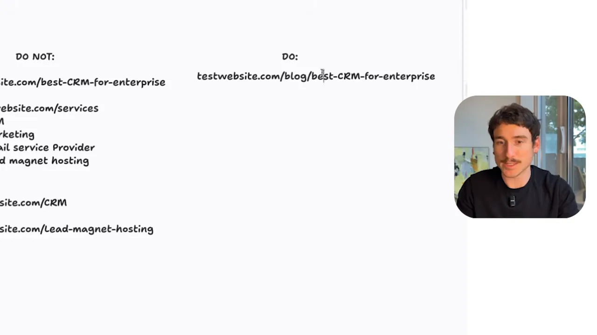
왜 중요할까요? 발표자의 설명은 이래요. 구글은 사람이 사이트를 둘러볼 때의 느낌을 흉내 내요. 정리가 잘된 사이트에서는 사람이 오래 머물고, 헷갈리는 사이트에서는 떠나요. 크롤러도 마찬가지로 헷갈리면 떠나고, 그러면 순위가 안 나와요.
폴더는 '무엇의 전문가인가'도 알려 줘요. /services/ 폴더 아래에 AI 검색, 기술 SEO가 있으면, 그 분야를 서비스로 팔 만큼 잘한다는 신호가 돼요. 그래서 서비스 페이지는 순위에 오르기 가장 쉬운 페이지이기도 해요. 단, 구조가 제대로 잡혀 있을 때 얘기예요.
사이트맵 다섯 폴더
발표자가 권하는 구조예요. 형광색 두 칸(/services/, /compare/)이 먼저 만들 곳이에요.

| 폴더 | 화면의 설명 | 예시 주소 |
|---|---|---|
| /services/ | 돈이 되는 페이지, 먼저 만들기 | /services/ai-search, /services/technical-seo |
| /compare/ | 퍼널 하단. 비교·대안·추천·리뷰 페이지 | /compare/you-vs-rival, /compare/rival-alternatives |
| /industries/ | 누구를 위한 서비스인지. 업종·쓰임새 페이지 | /industries/health-tech, /industries/ecommerce |
| /locations/ | 지역 서비스일 때. 도시별 페이지 | /locations/colorado |
| /blog/ | 보조 콘텐츠. 질문에 답하고 돈 되는 페이지로 연결 | /blog/how-much-does-x-cost, /blog/what-is-x |
폴더는 구글이 검색어마다 어떤 페이지를 보여 주고 싶어 하는지와도 맞물려요. 발표자가 'best GTM agencies'를 검색하자 1위가 고객사 Frontal의 글이었고, 그 아래도 전부 블로그 글이었어요.
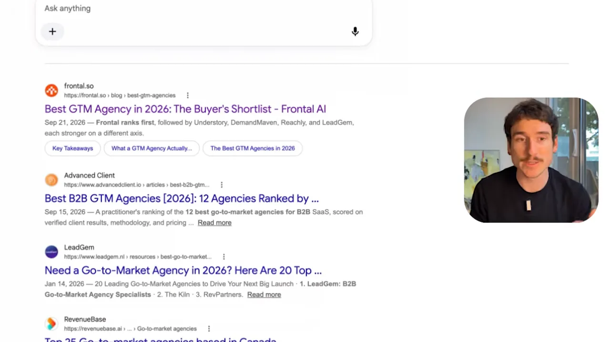
반대로 상위의 절반 이상이 서비스 페이지라면, 구글이 그 검색어에 서비스 페이지를 보여 주고 싶어 한다는 뜻이에요. 서비스를 찾는 사람에게는 서비스 페이지가 가장 맞는 답이니까요.
스키마: 보이지 않는 이름표
스키마 마크업은 페이지 화면에는 나오지 않지만, 구글과 AI 크롤러에게 '이 페이지는 무엇인지' 알려 주는 정보예요. 발표자는 스키마 검사 도구로 Frontal의 글이 Article(기사) 스키마를 쓰고 있다는 걸 보여 줘요. 이어서 회계법인 KPMG(Klynveld Peat Marwick Goerdeler)의 세무 서비스 페이지 소스를 열어요.
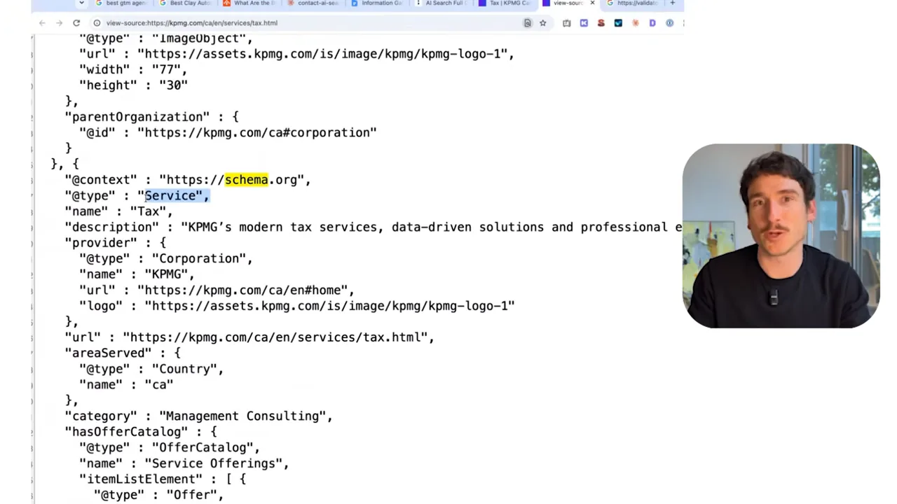
발표자는 KPMG가 이 페이지를 services 폴더에도 두었지만, 설령 폴더가 없었어도 이 스키마만으로 서비스 페이지라는 걸 크롤러에게 알릴 수 있다고 설명해요. 정리하면 서비스, 비교, 업종, 지역, 블로그를 폴더로 나누고, 페이지 종류에 맞는 스키마를 다는 거예요.
AI 개요에 뜨는 페이지 해부
발표자는 SEO와 AI 검색에는 거의 '체크리스트'가 있다고 말해요. 페이지에 정해진 부품이 다 있으면 순위에 오를 가능성이 높고, 빠지면 낮다는 거예요. 화면은 그가 만든 체크리스트 도구예요. 위쪽 칸은 짧은 문단, 고객 후기, 글머리표, 스크린숏, 직접 써 본 리뷰, 저자 프로필 같은 항목이에요. 아래 'Unique information' 칸은 다음 섹션의 정보 이득 항목이에요.
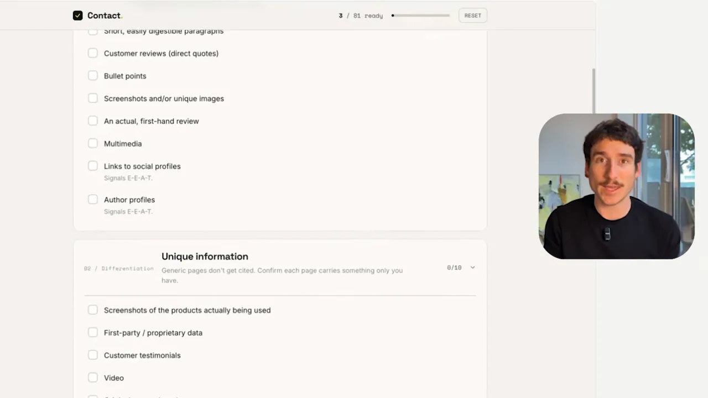
예시는 고객사 Frontal의 'Best GTM Agency in 2026: The Buyer's Shortlist' 글이에요. 'best GTM(Go-to-Market) agencies'로 구글 1위이면서 AI 개요에도 인용되는 글이에요. 아래 그림은 발표자가 위에서 아래로 짚어 간 부품을 한 장에 모은 거예요.
글 머리: 저자, 날짜, 키워드

- 실제 사람 저자: 이름(Kenny Damian)을 누르면 LinkedIn으로 가요. 같은 정보라도 누가 말했는지에 따라 믿음이 달라져요.
- 게시일과 수정일: 최근에 고쳤을수록 유리하다고 해요. 읽는 시간 표시는 필수는 아니지만 있으면 좋아요.
- 키워드 일치: 제목, URL(Uniform Resource Locator) 슬러그, 페이지 소스의 title 태그, H1이 모두 대표 키워드 'best GTM agency'로 시작해요. 뒤에 붙는 말은 상관없고, 이 키워드가 그대로 살아 있는 게 중요해요.
본문 앞쪽: 핵심 요약, 정의, 방법론
본문은 'Key Takeaways' 상자로 시작해요. 글머리표 다섯 줄이고, 줄마다 앞부분이 굵은 글씨예요.
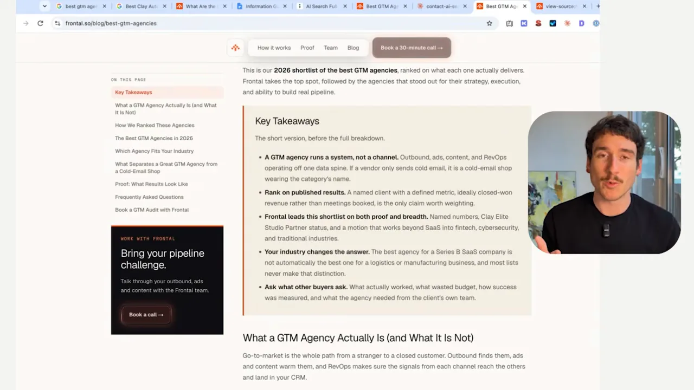
사람은 답을 빨리 원하고, AI 크롤러는 구조가 잡힌 짧은 정보를 쉽게 가져가요. 그다음 'GTM 대행사란 무엇이고 무엇이 아닌가'처럼 용어를 정의해요. 꼭 필요하진 않지만 독자와 AI 모두에게 맥락을 줘요.
이어지는 'How We Ranked These Agencies'가 발표자가 가장 좋아하는 방법론 섹션이에요. 어떤 기준으로 선택지를 비교했는지 밝혀요.
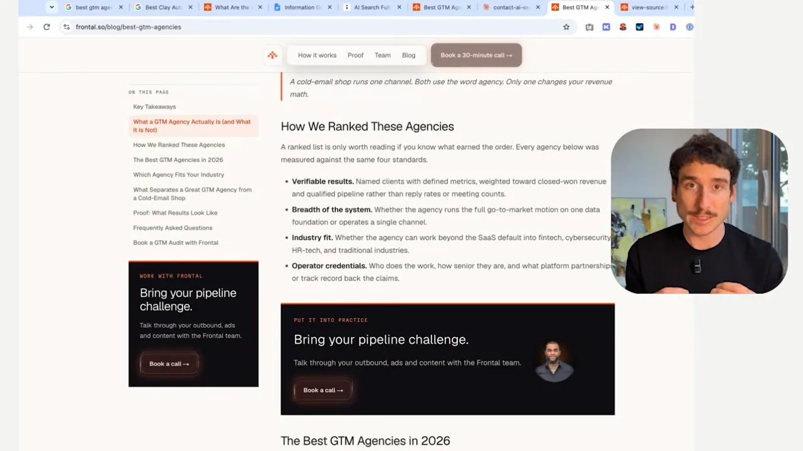
목록 본문: '이런 사람에게 맞아요', 영상, 스크린숏
추천 글이라 각 대행사를 하나씩 소개해요(비교 글이나 대안 글, 랜딩 페이지는 구성이 조금 달라요). 대행사마다 'Best suited to'(이런 곳에 맞아요) 문장이 꼭 들어가요. AI는 'A가 최고'가 아니라 '이런 조건이면 A, 저런 조건이면 B'로 답하거든요.
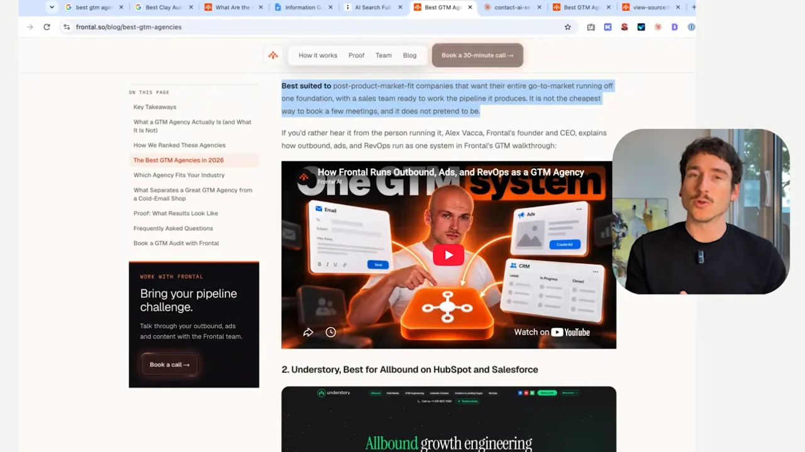
실제로 구글에서 'best GTM agencies'를 검색하면 AI 개요가 Frontal을 'Post-product-market-fit B2B SaaS'에 맞는 곳으로 소개해요. 글의 'Best suited to' 문장이 거의 그대로 옮겨 간 거예요.

유튜브 영상을 넣는 이유는 둘이에요. 구글이 자기 서비스인 유튜브를 반기고, 방문자가 영상을 보면 페이지에 머무는 시간이 늘어요. 발표자는 프로 유튜버일 필요가 없다고 해요. 동료가 질문하고 내가 답하는 통화를 녹화해서 잘라도 돼요.
또 하나는 경쟁사 스크린숏이에요. 아래는 경쟁 대행사 DemandMaven을 소개하는 부분인데, 그 회사 웹사이트를 캡처해 넣었어요.
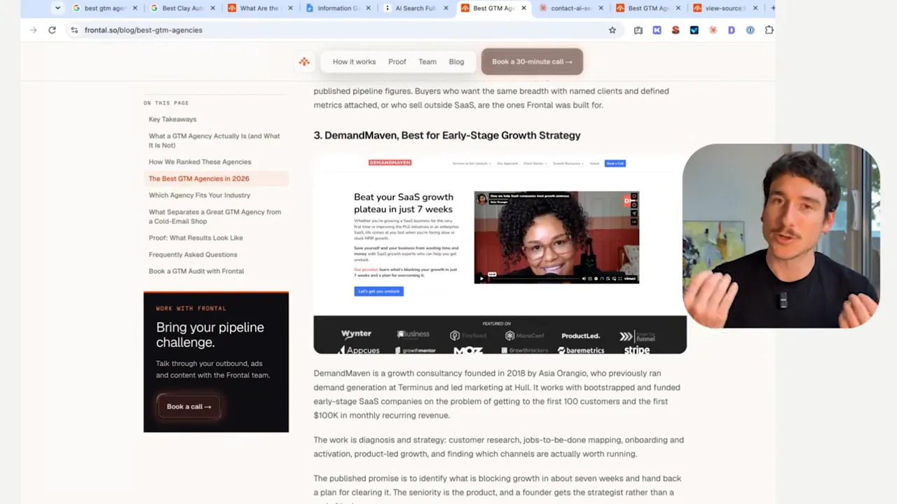
SaaS 회사라면 경쟁사 제품에 직접 가입해 써 보고 그 화면을 넣는 게 가장 좋대요. 경쟁사에 돈을 주기 싫다는 사람도 있지만, 발표자는 Wirecutter 같은 전문 리뷰어처럼 생각하라고 해요. 직접 써 본 흔적이 없는 리뷰는 아무도 믿지 않아요.
비교표: AI 답변의 재료
발표자가 지금 가장 좋아하는 부품이에요. 체크리스트에서도 1번이에요. 앞에서 본 AI 개요의 '한눈에 보기' 표를 만든 게 바로 글 속의 'Side-by-Side Comparison' 표라고 해요.

비교표가 잘 먹히는 이유를 발표자는 세 가지로 설명해요. AI는 객관적인 비교를 좋아하고, '가장 싸다' 대신 실제 가격 같은 숫자를 좋아하고, 정해진 방법론으로 같은 기준을 적용한 비교를 좋아해요. AI가 요약하기 쉬운 형태로 일을 덜어 주는 셈이에요.
본문 뒤쪽: 고르는 법, 성과, FAQ
'Which Agency Fits Your Industry' 섹션은 업종별로 무엇이 달라지고 어떤 신호를 봐야 하는지 표로 정리해요. 핀테크라면 이런 대행사, 사이버보안이나 HR(Human Resources) 테크라면 저런 전문성을 보라는 식이에요.
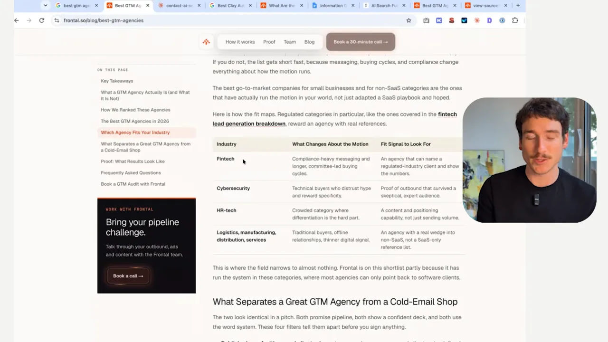
발표자의 원칙은 단순해요. 구글의 목표는 검색한 사람의 문제를 가장 잘 푸는 글을 보여 주는 거예요. 내 목표를 거기에 맞추면 같이 이겨요. 이어서 'GTM 대행사와 콜드메일 대행사는 뭐가 달라요?' 같은 흔한 질문에 미리 답해요. 잠재 고객의 반론을 앞질러 막는 거예요.
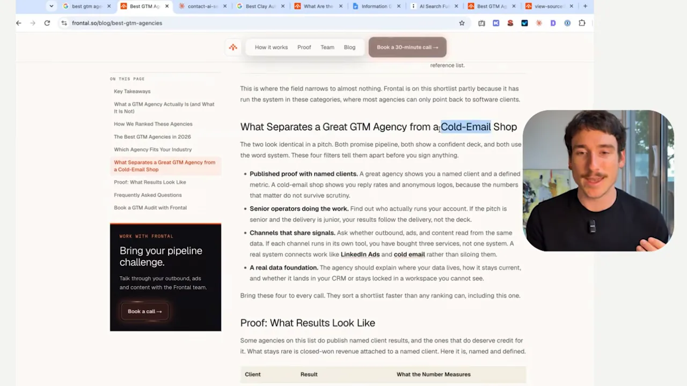
그다음이 발표자가 가장 중요하다고 꼽는 FAQ예요. 거의 모든 글에 넣으라고 해요.
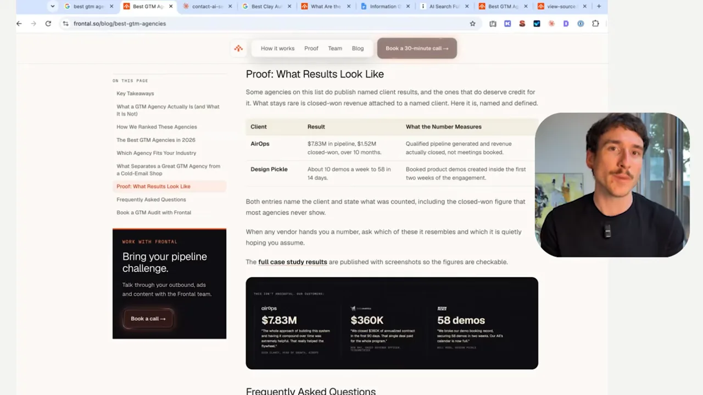
- FAQ의 질문들은 대표 검색어와 관련된 롱테일 검색어예요. 이 글은 'best GTM agencies' 하나만 노리는 게 아니라 소제목의 보조 키워드도 함께 노려요.
- 답은 2~3문장을 넘기지 않아요.
- 소제목은 대부분 H2로 써요. FAQ 섹션 제목은 H2, 질문 하나하나는 H3예요.
맨 아래에는 저자 소개와 LinkedIn 링크, 관련 글 내부 링크, 마지막 CTA가 있어요.
CTA는 몇 개가 좋을까요
이 글에는 CTA가 다섯 군데 있어요. 상단 메뉴의 고정 버튼, 왼쪽에서 눈길을 끄는 움직이는 상자, 상단 3분의 1 지점, 본문 속 자연스러운 문장('Book a 30-minute GTM audit'), 맨 아래예요.
- 개수: 최소 셋(위·가운데·아래). 열 개쯤 되면 과하니 셋에서 다섯이 적당해요. 고정 CTA는 늘 눈에 보여서 좋대요.
- 내용 일치: CTA는 페이지 내용, 그리고 그 페이지에 온 사람의 의도와 맞아야 해요. GTM 대행사를 찾는 사람에게는 'GTM 진단 통화', 고스트라이팅 서비스를 찾는 사람에게는 '무료 LinkedIn 프로필 진단'처럼요.
발표자는 전환 없는 트래픽은 허영 지표라고 다시 말해요. 많은 사람이 놓치는 부분이지만 전환율 차이가 크대요.
정보 이득: 남이 못 베끼는 정보 넣기
요즘 많은 사람이 이미 순위에 오른 글을 Claude에 요약시켜 새 글로 올려요. 발표자는 이렇게 물어요. 이미 있는 정보를 다시 말할 뿐인 글을 구글이 왜 올려 주겠어요? 구글의 사업도 사람들이 인터넷에 새 정보를 계속 보태야 굴러가요. 그래서 남의 글에 없는 새 정보, 곧 정보 이득이 순위에 중요해졌다는 게 그의 설명이에요.
근거로 구글 특허를 보여 줘요. 제목은 'Contextual estimation of link information gain'이고, 오른쪽 파란 상자에 특허 번호 US11354342B2가 있어요.

정보 이득을 만드는 열 가지
체크리스트 도구의 'Unique information' 칸을 위에서부터 하나씩 체크하며 설명해요. 아래 화면은 여섯째 항목까지 체크한 상태예요.
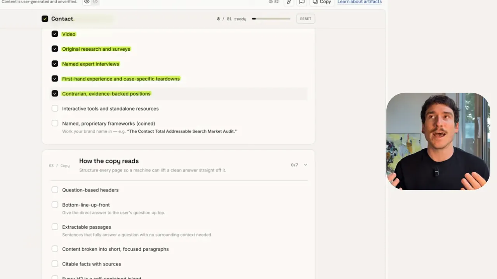
| 항목 | 발표자의 설명 |
|---|---|
| 실제 사용 스크린숏 | 추천 글이라면 비교하는 제품을 하나하나 직접 쓴 화면 |
| 1차·자체 데이터 | SaaS의 사용 지표처럼 대부분 회사가 이미 갖고 있어요. 개인정보는 빼요 |
| 고객 후기 | 남이 못 가진 정보예요. 관련 Reddit 댓글을 캡처하고 원글로 링크해도 돼요 |
| 영상 | 창업자나 CMO(Chief Marketing Officer)가 인터뷰를 받는 간단한 영상. 인터넷에 없던 관점이 나와요 |
| 원본 조사·설문 | 거창한 연구가 아니어도 돼요. 30분이면 할 수 있어요 |
| 이름 있는 전문가 인터뷰 | 조금 더 기자처럼 접근하는 방식이에요 |
| 직접 겪은 경험과 사례 분석 | 다른 제품을 리뷰하거나 내 제품의 구체적 쓰임새를 풀어요 |
| 근거 있는 반대 의견 | 재미로 던지는 반론은 안 돼요. 독자의 결정에 도움이 돼야 해요 |
| 인터랙티브 도구 | ROI 계산기, CRM 비용 계산기처럼 Claude나 ChatGPT로 쉽게 만들 수 있어요 |
| 이름 붙인 고유 프레임워크 | 발표자는 'inbound engineering'이라는 말을 만들었고, 그 말로 검색하면 자기가 나와요 |
30분짜리 조사 해 보기
발표자는 '어떤 LLM이 짧은 소설을 가장 잘 쓰나'라는 조사를 즉석에서 해 봐요. 조사에는 방법론이 꼭 있어야 해서, 먼저 화면에 규칙을 적어요.
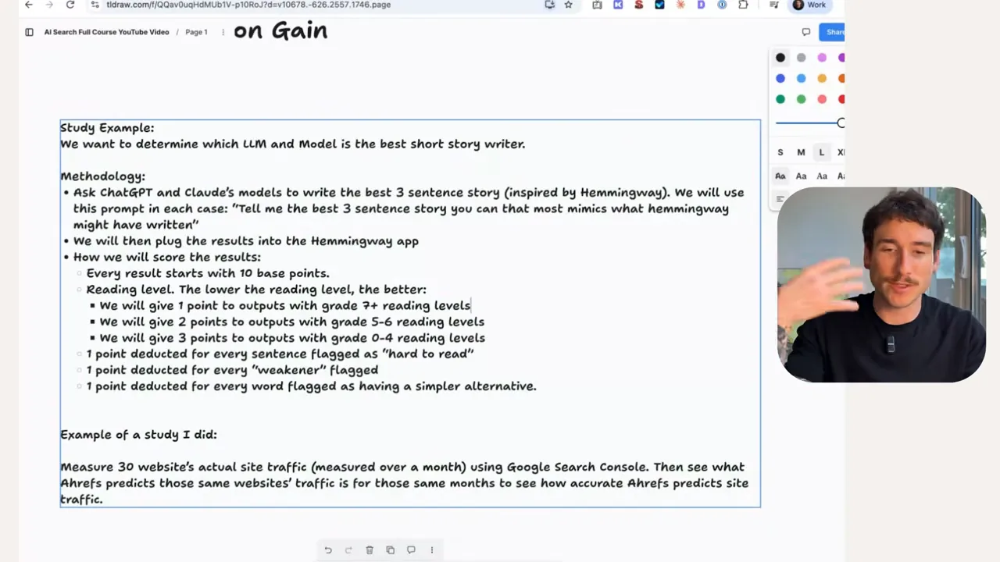
- 모든 결과는 기본 10점에서 시작해요.
- 읽기 수준 7학년 이상이면 1점, 5~6학년이면 2점, 0~4학년이면 3점을 더해요.
- 읽기 어려운 문장, 약한 표현, 더 쉬운 말이 있는 단어마다 1점씩 빼요.
그다음 ChatGPT에 프롬프트를 넣어요. 화면 아래 모델 선택 칸에 'GPT-6.1 Sol'이 보여요.
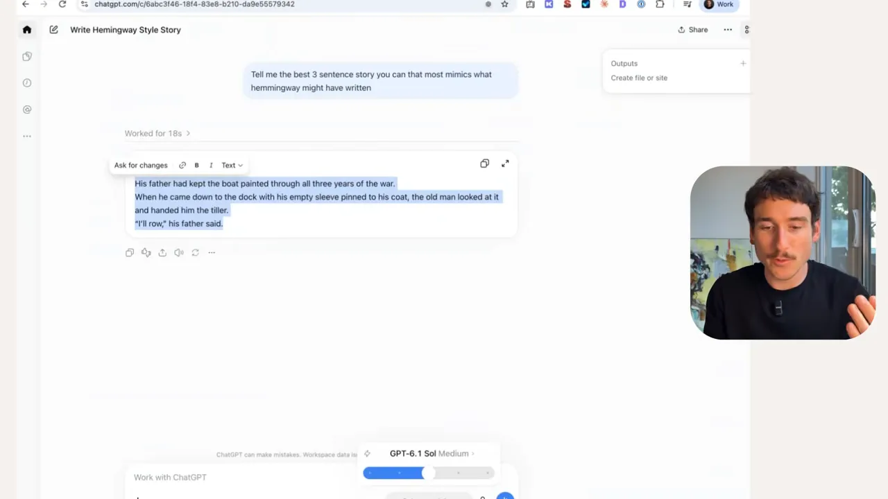
같은 프롬프트를 Luna라는 다른 모델에 넣으면 5학년 수준이 나와요. 이렇게 ChatGPT 모델들과 Claude 모델들을 돌리면 끝이에요. 30분이면 '모델별 글쓰기 실력'에 대한 작은 조사가 하나 생겨요.
물론 조사는 쓸모 있을수록 좋아요. 발표자가 실제로 한 조사는 앞에서 나온 Ahrefs 정확도 조사예요. 관리하는 30~40개 사이트의 지난달 실제 트래픽(구글 서치 콘솔)을 Ahrefs 추정치와 비교했어요. Ahrefs가 적게 잡는다면 예상보다 트래픽이 더 오고, 많이 잡는다면 투자 계산이 틀어져요. 이것도 Claude를 써서 30분 안에 끝냈대요.
정보 이득이 아닌 것, 그리고 다섯 단계
발표자는 팀 내부용 정보 이득 보고서를 공개해요. 먼저 정보 이득이 아닌 것을 짚어요. 상위 결과를 바꿔 말하거나 요약한 글, 근거나 경험 없이 던진 의견, 이미 있는 정보를 순서만 바꿔 엮은 가이드예요.
그리고 '다섯 단계 버전'이 있어요. 화면에는 그중 1단계가, 아래쪽에 2~5단계가 이어져요.
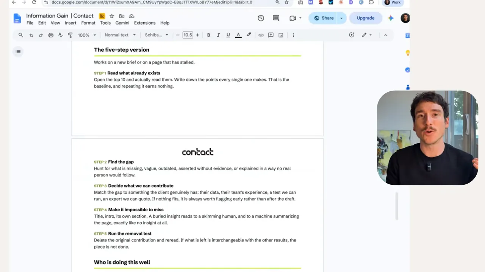
flowchart LR A["1. 이미 있는 글 읽기
상위 글의 요점을 적어요"] --> B["2. 빈 곳 찾기
빠진 맥락은?"] B --> C["3. 기여할 것 정하기
우리 데이터·경험으로
채울 수 있는 빈 곳"] C --> D["4. 못 보고 지나치게
조사·방법론을
H2로 드러내요"] D --> E["5. 지우기 테스트
기여를 빼도
글이 서나요?"]
쉽게 얻는 열 가지 예
보고서 끝에는 '10가지 쉬운 승리'가 있어요. 한 글에 여러 개를 넣을수록 좋다고 해요.

- 내 대시보드나 고유 데이터의 스크린숏
- 팀원이 나를 인터뷰한 유튜브 영상을 글에 넣기
- 구글, Trustpilot, Reddit의 실제 후기를 캡처하고 링크하기
- 실제 프로젝트의 전후 비교
- 고객이나 고객사 직원의 한마디
- 작성자가 직접 해 본 간단한 테스트
- 공개해도 되는 자체 데이터에서 뽑은 통계
- 행사나 비하인드 실제 사진(소개 페이지의 팀 사진도 좋아요)
- 경쟁사 제품을 실제로 써 보고 만든 비교
- '3월에 X에서 Y로 갈아탔고, 잘된 점과 아닌 점은 이랬다' 같은 날짜 있는 경험담
LinkedIn과 YouTube로 빨리 오르기
발표자는 자기 도메인 권위가 낮을 때 쓸 수 있는 지름길로 LinkedIn과 YouTube를 꼽아요. 그가 보여 주는 LinkedIn 게시물의 그래프 제목은 'LinkedIn is the 2nd most cited website in AI answers'예요.
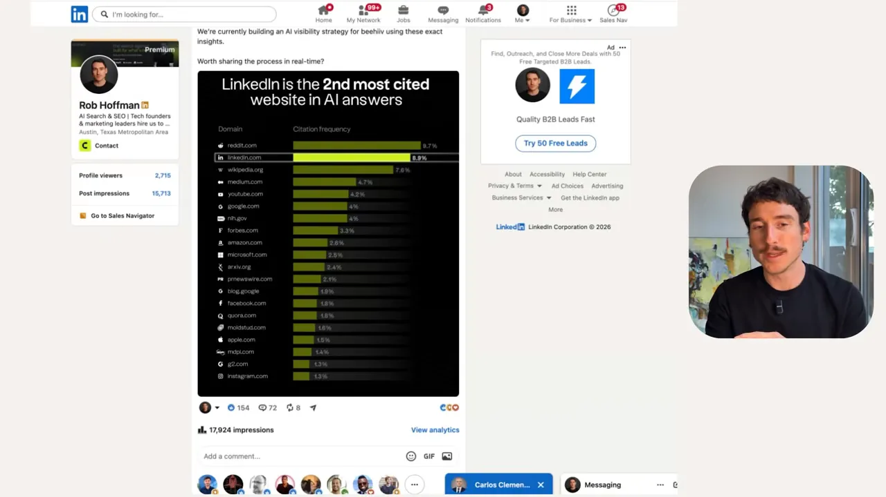
구글 AI 개요만 놓고 보면 순위가 달라요. 발표자는 Ahrefs의 조사에서 YouTube가 AI 개요에 가장 많이 인용된 사이트였다고 말해요. 이 수치는 발표자가 인용한 것이고, 이 문서에서 원문을 따로 확인하지는 않았어요.
LinkedIn Pulse 아티클로 1위 하기
'best clay automation agency'를 검색하면 AI 개요에 고객사 Frontal이 첫 줄에 나와요. 오른쪽 출처 칸에도 Frontal의 LinkedIn 글이 보여요.
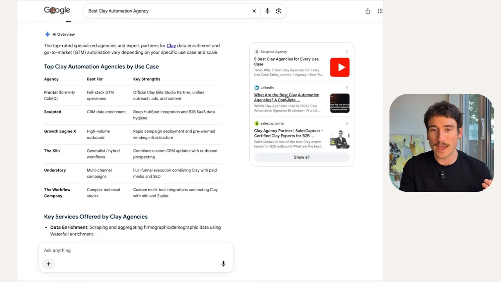
일반 검색 결과에서도 1위인데, 역시 자기 사이트가 아니라 LinkedIn Pulse 아티클이에요. 방법은 이래요.
- 웹사이트 글을 다시 써서 LinkedIn에 올려요 — 같은 원칙으로 쓰되 복사해서 붙이면 안 돼요. 내 사이트 글과 경쟁하게 되거든요.
- 창업자가 아니라 회사 계정으로 올려요 — 이 글이 순위에 오를 때 'best clay automation agencies'와 회사 이름 Frontal이 함께 묶이게 하려는 거예요.
- 창업자와 직원이 공유해요 — 글로 오는 트래픽이 늘면 순위에도 도움이 돼요.
- 댓글에 웹사이트 원문 링크를 달아요 — 원래 글로도 사람을 보내요.
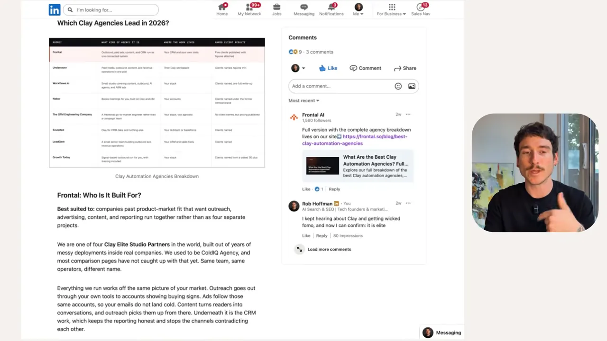
YouTube: 기준이 낮은 지금이 기회
Frontal은 창업자의 메인 채널과 별도로, AI 검색 인용만을 노리는 채널을 따로 만들었어요. 영상은 Frontal을 인터뷰해서 만든 단순한 영상들이에요. 유명해지려는 게 아니라 AI 검색에 인용되려는 목적이에요.
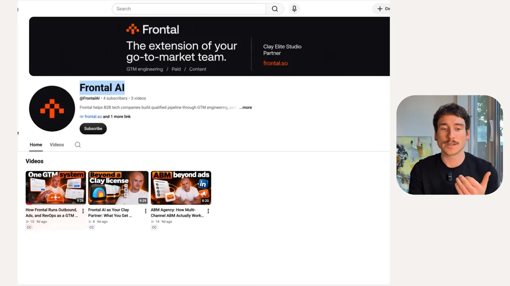
발표자는 지금 YouTube에 수요와 공급의 틈이 있다고 봐요. 어떤 검색어로 영상을 찾는 사람은 많은데 딱 맞는 영상이 없어서, 품질이 낮거나 조금 빗나간 영상이 인용되고 있다는 거예요. 확인하는 방법도 보여 줘요. AI 가시성 추적 도구에서 'outsourced SDR services' 같은 프롬프트를 추적하면, 어떤 출처가 인용되는지 보여요.
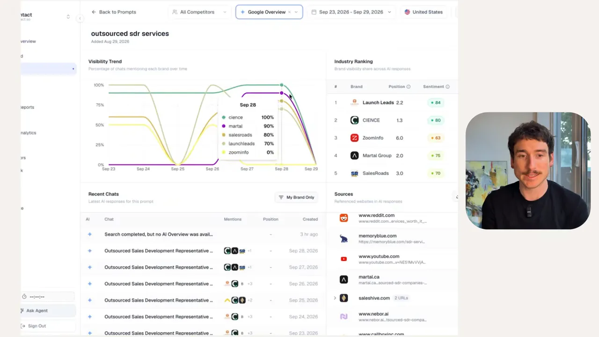
그 영상을 열어 보면 이래요. 사진 한 장에 AI 음성을 입힌 영상인데, 제목도 'outsourced SDR services'가 아니라 'sales outsourcing'이라 정확히 맞지도 않아요.
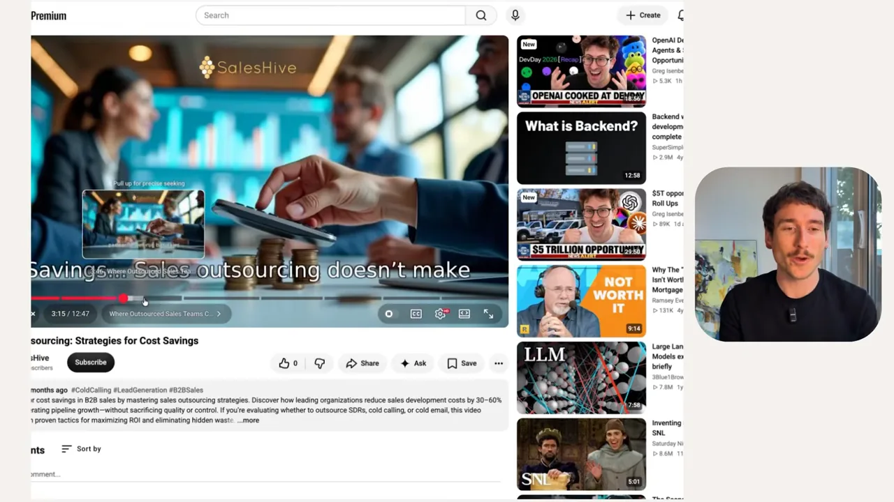
같은 도구로 지금 인용되는 페이지도 볼 수 있어요. 이 프롬프트에서는 Leadium의 'Best Outsourced SDR Companies in 2026' 글이 인용돼요. 이런 페이지가 있으면 더 나은 페이지를 만들고, 내 페이지가 있으면 고쳐요.
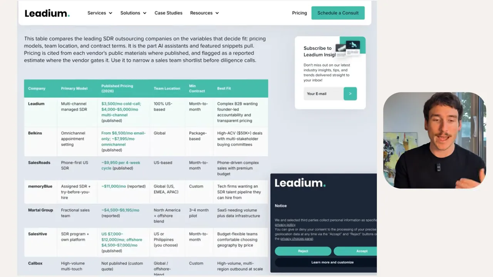
유튜브 최적화 체크리스트
도구로는 VidIQ와 TubeBuddy를 소개해요. 다만 화면 메모에도 적혀 있듯, 이 도구들의 데이터가 얼마나 정확한지는 아무도 몰라요. 주변에 잘되는 유튜버들이 쓴다는 정도로만 소개해요.
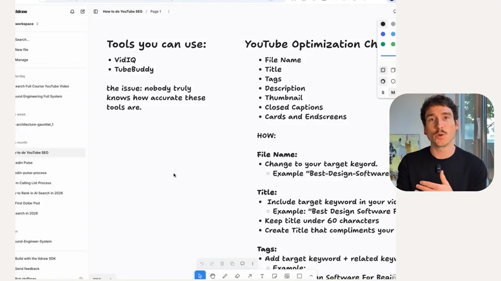
| 항목 | 할 일 |
|---|---|
| 파일 이름 | 올리는 영상 파일 이름을 대상 키워드로. 예: Best-Design-Software-For-Beginners |
| 제목 | 대상 키워드를 넣고 60자 이내. 썸네일과 서로 보완되게. 예: Best Design Software For Beginners: The Ultimate Guide (2026) |
| 태그 | 대표 키워드로 시작하고 관련 키워드 몇 개. 너무 고민하지 않아요 |
| 설명 | 대표·보조 키워드를 넣고, 챕터와 타임코드를 달고, 무엇을 배우는지 구체적으로. 대본을 AI에 주고 쓰게 해도 충분해요 |
| 썸네일 | 주로 추천 피드 클릭용이에요. 제목과 맞추되 제목에 못 넣은 맥락과 궁금증을 더해요. 썸네일 파일 이름도 키워드로 |
| 자막 | 대본을 자막으로 올려요. Gemini로 받아 적거나 촬영 도구에서 내려받아요 |
| 카드·엔드스크린 | 영상 끝에서 다른 관련 영상으로 안내해요 |
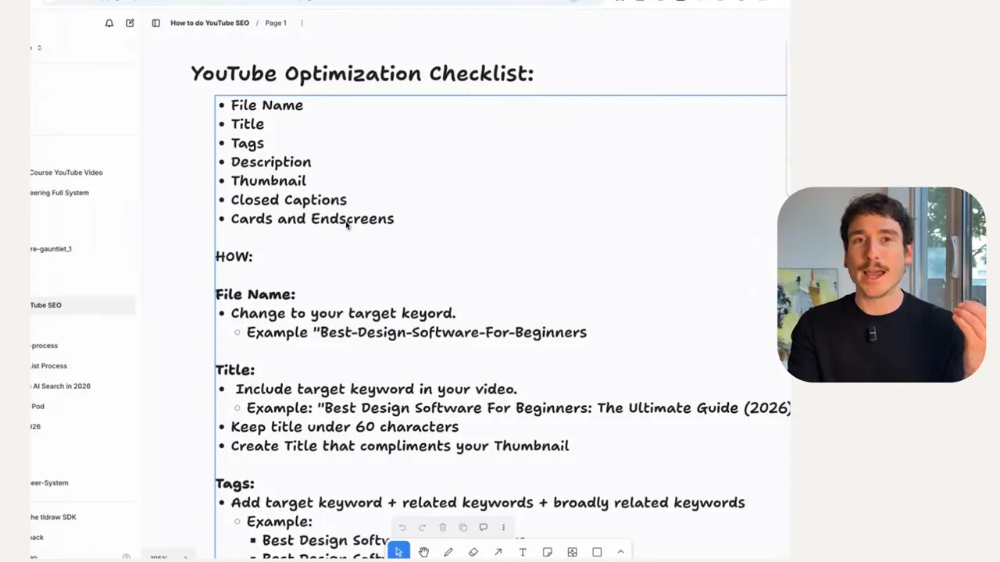
발표자가 특히 강조하는 건 자막이에요. AI 크롤러는 눈이 없어서 영상을 보지 못하고, 대본을 읽고 판단해요. 그래서 실제 대본이 자막으로 붙어 있어야 해요. 마지막 조언은 '너무 고민하지 말고 일단 올려라'예요. 지금은 YouTube로 AI 검색에 오르는 기준이 낮아서, 예상 못 한 순위가 나올 수 있다고 해요.
백링크는 마지막, 그리고 성과 재기
발표자는 백링크를 일부러 마지막에 다뤄요. 그의 '뜨거운 의견'은 이래요. 많은 SEO 대행사가 백링크를 파는 건 쉬워서예요. 아는 도매상에게서 100달러에 링크를 사서 500달러에 넘기면 되니까요. 화면에는 링크 하나 500달러, 다섯 개 2,250달러, 열 개 4,000달러 같은 요금표 예시가 나와요.
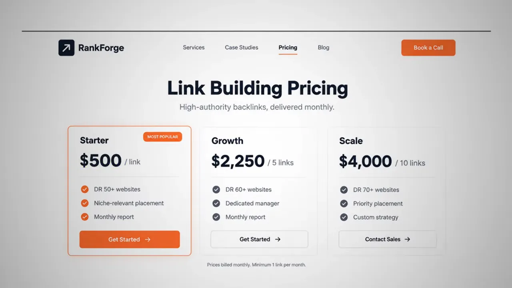
그가 백링크를 뒤로 미루는 이유는 세 가지예요.
- 자연히 따라와요: 정보 이득이 있는 독창적인 글을 쓰면 다른 사이트가 인용하면서 링크가 생겨요.
- 나쁜 링크는 해가 돼요: 링크를 팔려고만 만든 사이트들, 곧 프라이빗 블로그 네트워크에서 온 링크는 득보다 해가 커요. 많으면 스팸 벌점을 받을 수도 있어요.
- 쓰임이 하나뿐이에요: 좋은 글은 LinkedIn 글, YouTube 영상, 소셜 게시물로 다시 쓸 수 있어요. 백링크는 뒤에서 권위만 보태고, 판매자에게 분기나 연 단위로 계속 돈을 내야 할 때도 있어요.
그렇다고 백링크가 쓸모없다는 말은 아니에요. 도메인 권위와 DR에 분명히 영향을 줘요. 백링크 상태가 궁금하면 Ahrefs에서 사이트를 넣고 Backlinks와 Referring domains 메뉴를 보면 돼요.
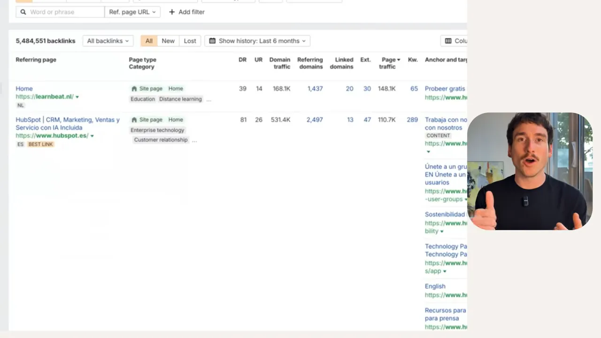
링크를 받는다면 두 가지를 봐요. 같은 분야의 사이트인지, 그리고 그 사이트 자체가 DR이 높은지예요. CRM 회사에 반려동물 사료 사이트가 링크를 주는 건 의미가 없어요. HubSpot이라면 다른 큰 테크 회사나 Forbes 같은 매체가 이상적이에요.
성과는 세 가지 도구로 재요
마지막은 측정이에요. 발표자는 짧게 세 가지만 말해요.
- 구글 서치 콘솔: 트래픽과 실제 순위의 기준점이에요.
- GA4: 폼 제출, 상담 예약 같은 전환을 이벤트로 추적해요.
- AI 가시성 추적 도구: AI 개요, Claude, Perplexity에 넣는 프롬프트에서 내가 얼마나 보이는지 시간에 따라 봐요. 발표자는 Profound를 가장 잘 알려진 예로 들어요.